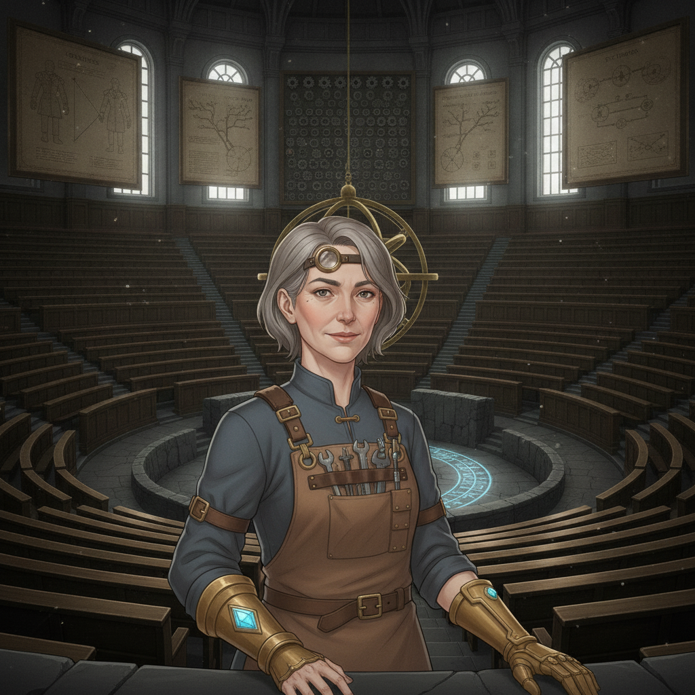
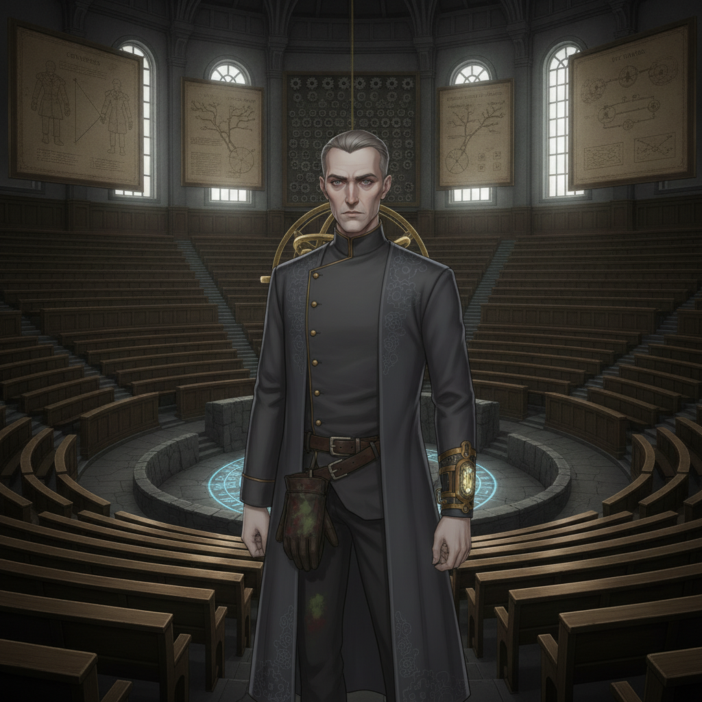
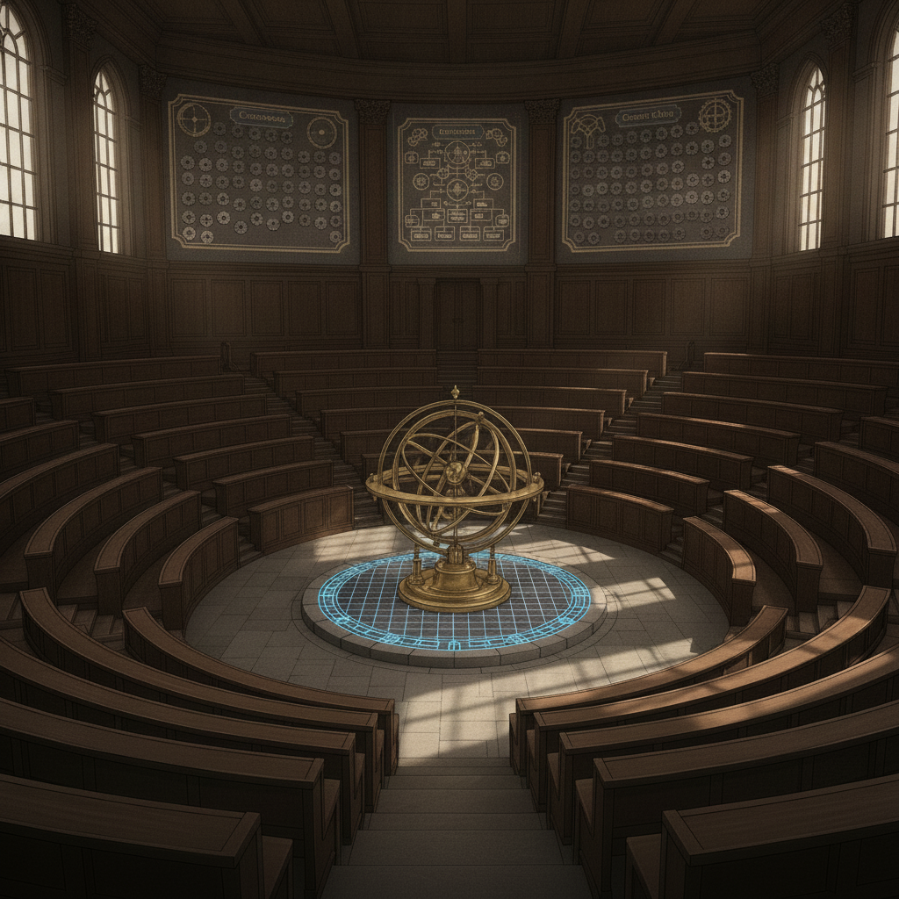

Professor Mirabel Quist“Today, we delve into the doctrine of the Weave. Metered power is safe power. Ungoverned channeling, as you know, is a crime the College itself trains you to police.”

Silas Thorn“Observe. The difference between Vash-strong raw current and Sela-strong precision is not merely technique, but philosophy. Which do you choose to master?”

I watch the love interests, observing their signature styles. Ember Kellan, refusing to meter, her Vash-strong current barely contained. Isolde Vorn, leashing herself tight, Sela-strong precision almost painfully restrained.
Seraphine Halcyon braids Spirit and Air with an unnerving, delicate control. Wren Ashfield answers nothing she isn't forced to, her guarded strength simmering beneath the surface.